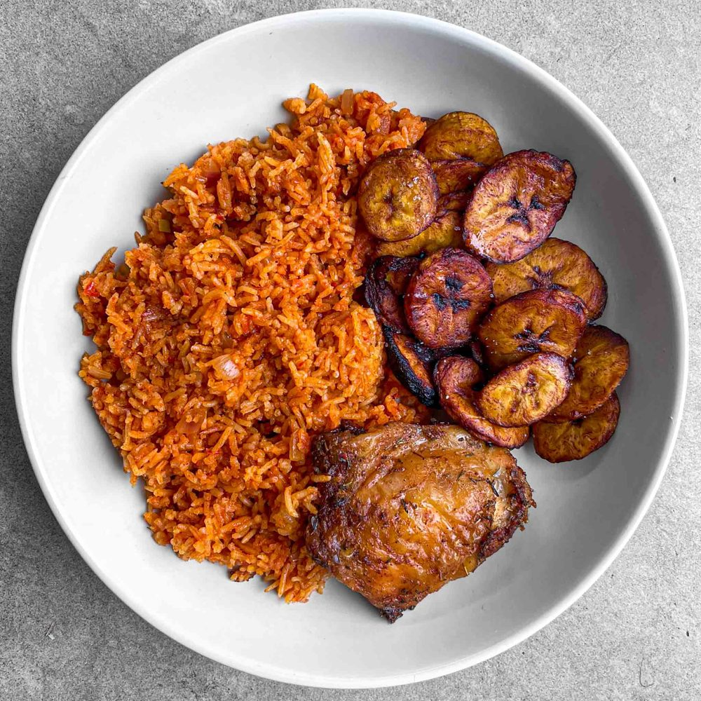
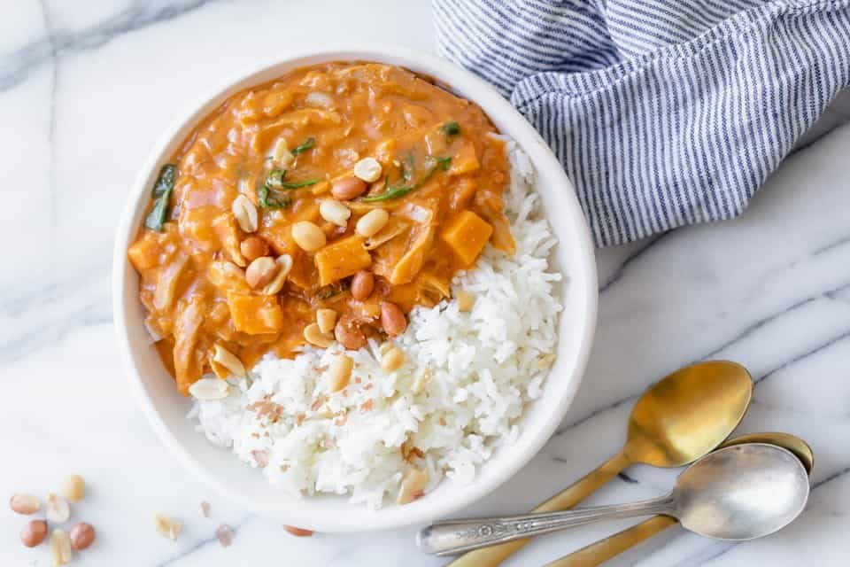
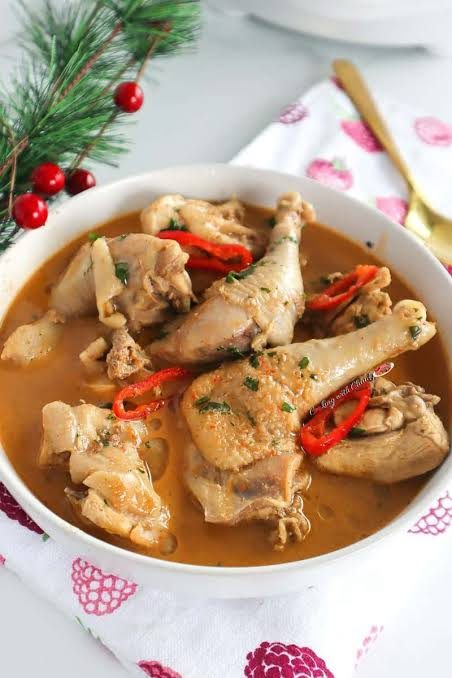

 Jollof Rice Le 75 Flavourful rice cooked in a rich tomato and pepper sauce, served with your choice of chicken or fish.
Cassava Leaves Le 80 A much-loved local dish prepared with leafy cassava, palm oil and traditional seasonings. Served with rice.
 Groundnut Soup Le 80 A hearty peanut-based soup with a rich, comforting flavour, served with rice.
 Chicken Pepper Soup Le 70 A spicy, aromatic broth with tender chicken. Perfect for sharing on a cool evening.